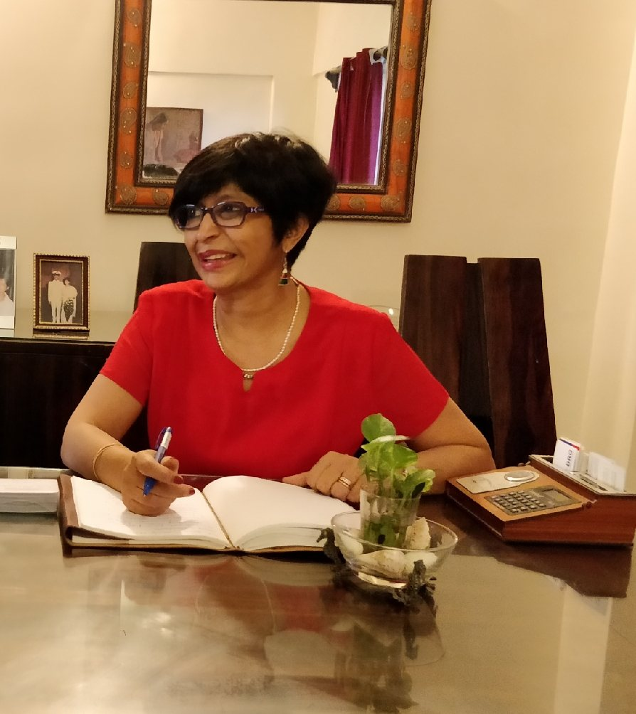

ACC
Managed HR for 1,800 management staff across 17 plant locations, gaining extensive exposure to multi-site manufacturing HR, plant culture, performance, workforce practices and leadership development.
Executive, Career & Leadership Coach
Helping professionals navigate career transitions, grow as leaders and create meaningful careers with confidence and clarity.
“What you seek is seeking you.”Rumi
Coaching
Your career can change in many ways. You may be stepping into your first leadership role, preparing for your next career move, navigating organisational change, returning to work, or simply wondering, “What next?”
Coaching gives you the space to step back, reflect, challenge your thinking and make intentional choices about your career and leadership journey.
I work with professionals from new managers to senior executives and C-suite leaders.
Gain clarity about your career direction, strengthen your positioning and navigate career changes with confidence.
Build executive presence, strategic thinking, influence, stakeholder effectiveness and leadership confidence.
Make the transition from individual contributor to people leader with greater confidence and effectiveness.
Step back, reassess what matters and design the next phase of your professional journey.
Understand how AI is changing the workplace and identify the skills, tools and mindset needed to remain future-ready.
As organisations grow, leadership teams need to scale up and adapt their mindset to a more complex, fast-changing environment. I help them frame a clear vision and mission, set goals and empower the team to achieve them.
How coaching works
Coaching is more than understanding what to change. It is about feeling it, doing it, learning from it, and carrying that learning long after our sessions end.
Get clear on what you are really seeking and where you want to go, and set your goals and objectives.
Explore what is holding you back, find options for dealing with those roadblocks and learn ways to overcome them.
Deepen your capacity to reflect on your reactions, triggers and experiences, and turn them into personal growth and leadership capability.
Consciously change what no longer serves you, and become more aware, courageous and resilient as an individual and as a leader.
Executives at any level in transition from one role to another, or pivoting to a completely different one.
From individual contributor to team manager, or from functional leader to Business Head and C-suite.
Professionals ready to go out on their own, looking for their niche, an action plan and clear goals.
Mentor Coaching for ICF Level 1 & 2
I offer structured, reflective mentor coaching to help you deepen your coaching practice, strengthen your application of the ICF Core Competencies and build confidence as a coach.
Strengthen your coaching. Deepen your practice. Prepare for your ICF credential.
About Ruth
I believe that meaningful career growth begins with the willingness to pause, reflect and ask better questions.
I am Ruth Singh, a Professional Certified Coach (PCC) with the International Coaching Federation, with more than 25 years of experience across Human Resources, leadership and organisational development.
I moved into full-time coaching and training in 2018, following an inner calling. I am convinced that excellence in life and career comes from continuous learning and a willingness to grow.
My corporate career has taken me across manufacturing, financial services, FMCG, pharma, retail and other sectors, giving me a first-hand understanding of the realities of organisations, careers and leadership.
Before becoming a full-time coach, I held senior HR leadership roles, including Head of HR at Emkay Global Financial Services and General Manager – HR at Sapat Group of Companies. Earlier in my career, I spent over 12 years with ACC, working in corporate HR and gaining extensive exposure to plant and manufacturing environments.
Since 2018, through Propel HR Consultancy, I have worked with professionals and leaders across career stages, from entry level to C-suite. Today, I bring together my experience as an HR professional, corporate leader and coach to help individuals:
My coaching philosophy
I don’t believe coaching is about telling people what they should do. It is about creating the space to think, reflect, discover and choose.
My role is to help you see possibilities, challenge assumptions, recognise your strengths and take purposeful action towards the future you want to create.
Why work with Ruth
I don’t just understand leadership and career challenges from a coaching perspective. I have experienced the corporate world from within: leading HR functions, advising senior leaders, building teams and navigating organisational change.

Managed HR for 1,800 management staff across 17 plant locations, gaining extensive exposure to multi-site manufacturing HR, plant culture, performance, workforce practices and leadership development.
Built the HR function for a 600+ employee group, covering HR operations, talent acquisition, performance management, compensation and employee relations.
Led the full HR function across Institutional Equity, Retail Broking, Insurance, Investment Banking and Wealth Management divisions.
Testimonials
Ruth doesn’t offer generic advice. She tailors her approach to your specific situation. Her ability to listen deeply and ask the right questions helped me grow into my Director role with more confidence and clarity than I thought possible.
Ruth helped me find my purpose. That soul-searching work is at the core of everything else. She pushes the limit, sets timelines, and makes sure learnings carry forward session to session.
You anchored me out of the dense and dark jungle of uncertainty, low confidence, and self-doubt. Your experience and expertise were evident in every interaction.
Credentials
Experience
Insights
Articles on careers, leadership and the changing workplace.
Beyond coaching
I believe that continuous learning and a willingness to step outside our comfort zones keep us growing, both personally and professionally. Adventure sports are my passion: I enjoy sailing, and took up scuba diving in Port Blair! Yoga keeps me mentally and physically agile. I love cooking, especially baking, and I am an avid reader. The last book I read was Atlas of the Heart by Brené Brown.
“Making a difference to the lives and careers I connect with keeps my passion for coaching alive.”
Contact
If you are considering a career move, stepping into leadership, navigating a workplace challenge or simply looking for greater clarity about your next chapter, let’s have a conversation.
Not sure whether coaching is right for you? That’s okay. The first conversation is an opportunity to understand what you’re looking for and see whether we are a good fit.